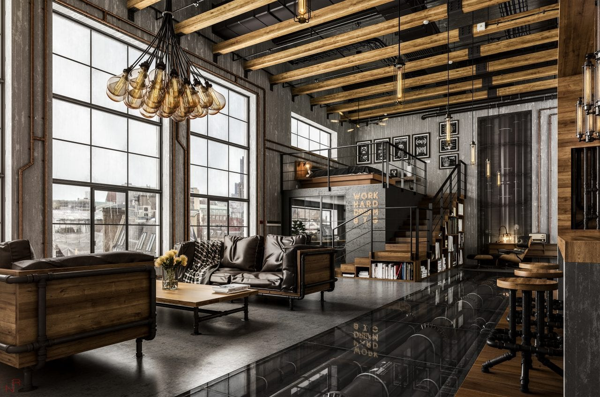

Stil
industrial
Stilul industrial nu a fost inventat de vreun designer nonconformist și nici nu a apărut ca o reacție la alte curente estetice, ci s-a format în timp, începând cu sfârșitul anilor ‘60, încercând să răspundă unor nevoi concrete ale societății. Numeroase fabrici și depozite din Europa și Statele Unite au fost închise în deceniile șapte, opt și nouă ale secolului trecut, odată cu modernizarea economică și dezvoltarea consumarismului, iar mulți oameni au descoperit în aceste spații părăsite o soluție excelentă pentru problema locuințelor.
În anii 2000, stilul industrial a devenit tot mai popular datorită asocierii cu o practică arhitecturală din ce în ce mai folosită: reutilizarea adaptivă a clădirilor cu valoare istorică. Caracteristicile aparte ale acestui stil ne permit să ne bucurăm de confort fără să distrugem particularitățile unei locuințe vechi, expunând-i elementele structurale, precum zidăria, țevile și stâlpii într-o manieră funcțională, simplă și foarte chic. Bineînțeles, stilul industrial nu este rezervat exclusiv locatarilor clădirilor fostelor fabrici, ci tuturor celor care-și doresc un decor creativ, modern și, în același timp, însuflețit de nostalgia unei alte epoci.
|  |
●Caracteristicile stilului industrial și cum creezi un decor industrial
Cum poți obține un decor industrial în căminul tău? Incearcă să ții cont de caracteristicile acestui stil și să le adaptezi spațiului pe care vrei să-l amenajezi